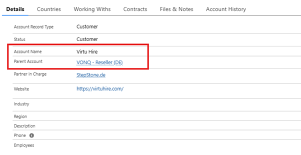
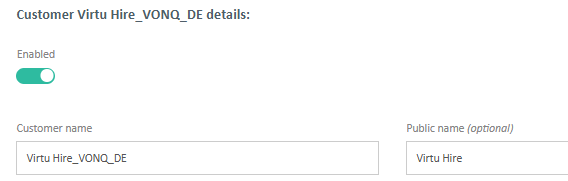
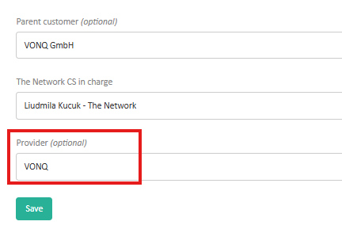
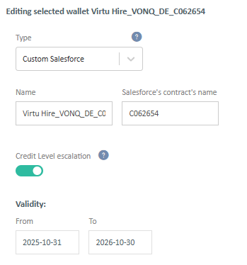
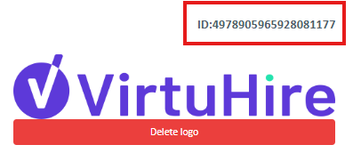

The VONQ procedure
Whenever you receive a request from StSt.de to set-up a new end customer for VONQ, you should follow this procedure:
- In Salesforce, DE needs to create a new account for the end customer, including the parent account (VONQ - Reseller (DE)). See an example of one of the VONQ accounts below:
- At the same time, DE sents a WW under this end customer to the required job board(s)
- Once the account and WW are created, DE sends an email request to TNW to set-up this customer in FlashPost, including all the necessary information (contract dates, duration, country(ies) to include, type of credits - standard or customized)
- On the TNW side, we create manually an empty SF contract, including the indicated country(iest) and using the provided dates & duration
- We link the WW to the contract so the WW does not expire
- We manually create a customer in FP (with extension _VONQ_DE in the name), tagging 'VONQ' as the provider:
- Next is the creation of a 'customized' wallet:
- In FP wallet we need to add the customer and the credits manually. It is recommended to add 20 GFP4 credits (20 being a safe number for 1 year ahead), the type (standard or customized) depending on the info provided by DE in their original request.
- And finally, we delegate the necessary channel(s) manually
- At last, we inform the receiving partner(s) via email explaining why they see an empty contract in SF, and to confirm what the price will be once the PO is created. You can see an example of such a communication below.
- We also inform DE team about the set-up being done, and communicate the customer ID, so they can share it with VONQ. You can see an example of a customer ID just below, and an example of a communication to DE at the bottom.
- Example of an email to the receiving partner:
- Example of an email to DE:





Dear Pnet Team,
Please, note that this is a special set up for an end customer of VONQ, therefore you won’t be able to see their contract details in SF.
Contract no: C062654.
Contract start date: 2025/10/31
Contract end date: 2026/10/30
Their listings will be covered with monthly Pos at the following price:
Product: Pnet | Standard Listing unit price rate - 15 % AE and - 1 % Reseller discount. (Comment: this information has to be provided in original DE request. If they missed providing it, ask them for more details)
Please, let me know if you have any questions.
Kind regards,
The Network Team
Hi DE,
Here is FP customer id for the provider: 4978905965928081177.
The delegation email was sent out to Pnet team as well. Please, allow them few days to set it up in FP.
Kind regards,
The Network Team